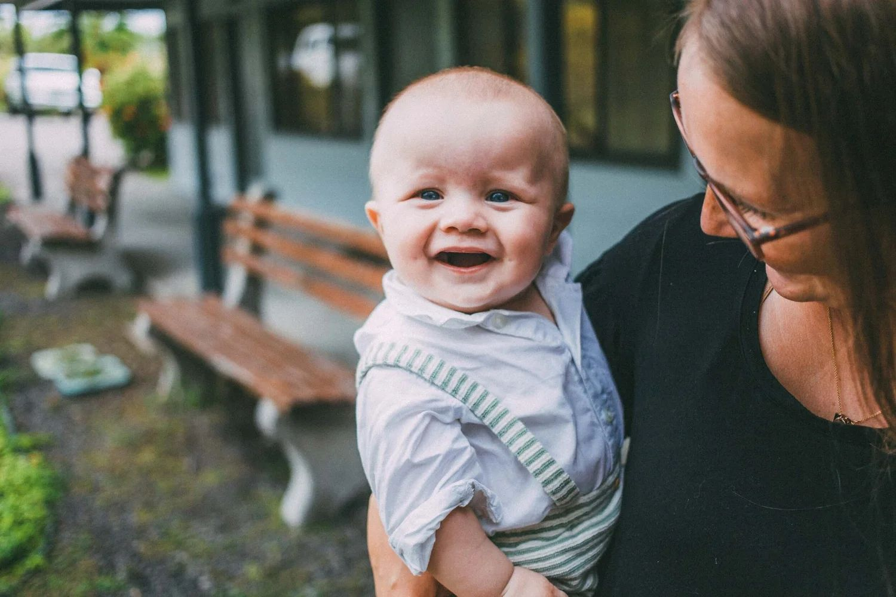
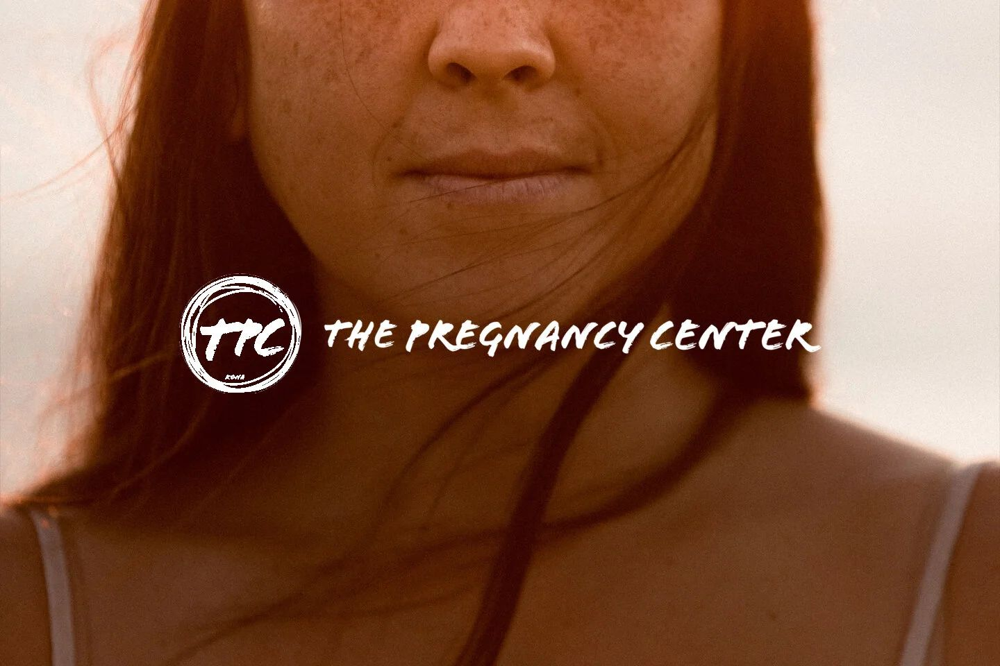

Harbor Network
Harbor Network
A church-planting network based in Louisville, KY, that exists to help pastors plant, grow and multiply healthy churches that last.
Learn more →A local church on the Kona coast, gathered by the gospel, shaped by the Scriptures, and standing with the saints who have gone before us.
We are a people who have been changed by Jesus and desire others to experience forgiveness and freedom through the shed blood of our risen Savior.
We tell people this great news and serve this community so more people will know Jesus. We gather on the Lord's Day for worship, scatter through the week into homes and community groups, and seek to love our neighbors across the Big Island in word and deed.

We hold the 1689 Second London Baptist Confession as a faithful summary of Scripture, joining us to the historic Reformed and Baptist witness.
We preach through books of the Bible, verse by verse, so that the whole counsel of God is heard and Christ is proclaimed from all the Scriptures.
We trust God to build His church through the Word, prayer, baptism and the Lord's Supper — the means Christ Himself appointed.
A plurality of qualified elders shepherds the congregation, and deacons serve its practical needs, as the New Testament describes.
Members commit to one another in love, accountability and care, under the oversight of the elders and the authority of Christ.
We set apart the first day of the week to rest in Christ and to worship God together — reverently, joyfully and simply.
“Thus says the Lord: Stand by the roads, and look, and ask for the ancient paths, where the good way is; and walk in it, and find rest for your souls.” — Jeremiah 6:16
We are not a new kind of church. We gladly trace our convictions through the Reformation to the Particular Baptists of seventeenth-century England, and beyond them to the apostles.
Martin Luther's Ninety-five Theses call the church back to the Scriptures and to justification by faith alone.
Seven Particular Baptist churches in London publish a confession of their faith, distinguishing themselves as Calvinistic in doctrine and Baptist in practice.
The Westminster Assembly produces the great Reformed confession of the English-speaking world, on which the 1689 is closely modeled.
Particular Baptists publish a new confession, following Westminster and Savoy wherever they could agree, to show their unity with other Reformed Christians.
After the Act of Toleration, representatives of over a hundred churches publicly own the Confession — the name by which it has been known ever since.
The General Assembly commissions a catechism for teaching the faith to children and new believers.
Baptist churches in America adopt the 1689, with small additions, as the Philadelphia Confession of Faith.
C. H. Spurgeon reissues the Confession for his London congregation, commending it as “an assistance in controversy, a confirmation in faith, and a means of edification in righteousness.”
By God's grace, we confess the same faith on the Big Island of Hawaiʻi.
“And they devoted themselves to the apostles' teaching and the fellowship, to the breaking of bread and the prayers.”Acts 2:42
We believe in amplifying Jesus and spreading the gospel both locally and globally. These are the ministry partners we support as a church.
A church-planting network based in Louisville, KY, that exists to help pastors plant, grow and multiply healthy churches that last.
Learn more →
Opened in 1992 as the only crisis pregnancy center on the Big Island, teaching the sacredness of human life, the soundness of sexual purity and the value of the family.
Learn more →
Serving with Mission Aviation Fellowship, sharing the love of Christ through aviation and technology so that isolated people may be physically and spiritually transformed.
Learn more →